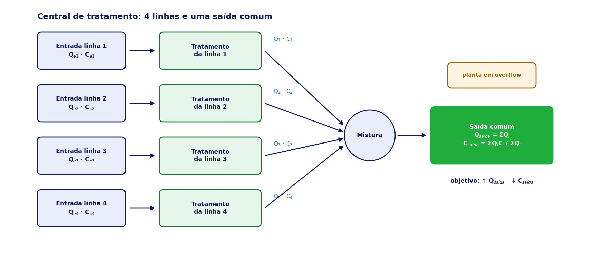
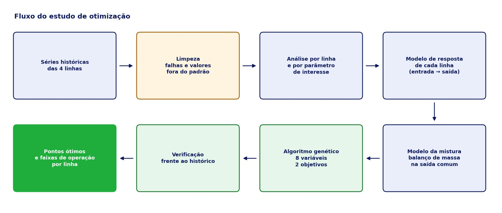
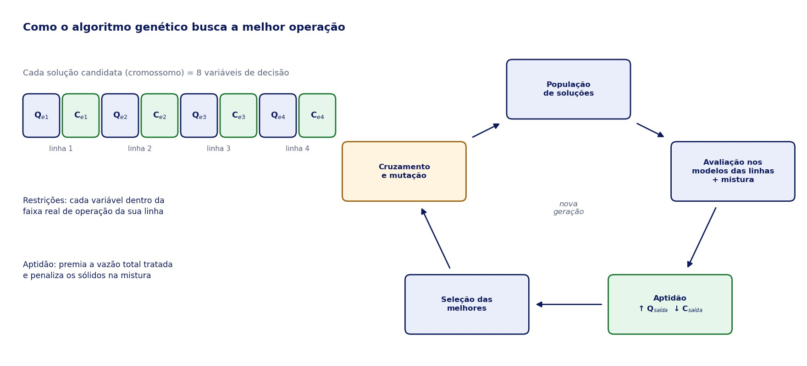
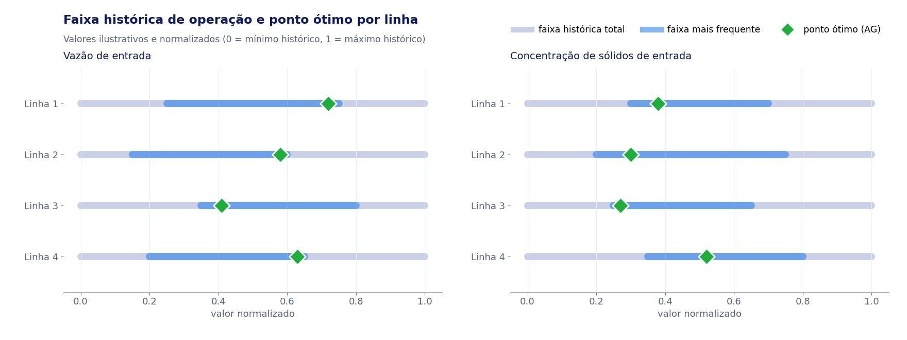

Problema / desafio do cliente
Uma empresa da área ambiental em São Paulo opera uma central de tratamento que recebe efluentes de diferentes indústrias químicas. A planta estava em overflow: recebia mais carga do que conseguia tratar, e a saída combinada ficava no limite de vazão e com sólidos acima do desejado.
Cada linha era operada de forma isolada, sem saber quanto cada uma podia receber e com qual concentração de sólidos sem prejudicar o resultado final. A pergunta do cliente era direta: qual a combinação de vazão e concentração de entrada em cada linha que trata o maior volume possível com a menor concentração de sólidos na saída?
Contexto e características do processo
- Cliente: empresa de serviços ambientais com central de tratamento de efluentes industriais em São Paulo.
- Quatro linhas independentes, cada uma com efluentes de origem e composição diferentes, sua própria vazão e concentração de sólidos de entrada e seu próprio tratamento.
- Cada linha gera uma vazão e uma concentração de sólidos de saída. As quatro correntes tratadas se juntam em uma saída comum, onde são medidas a vazão total e a concentração de sólidos da mistura.
- O que acontece em uma linha afeta o resultado de todas: uma linha mais carregada pode “consumir” a margem de sólidos das outras na mistura final.

Diagnóstico e dados analisados
- Foram analisadas as séries históricas de operação de cada linha: vazão e concentração de sólidos de entrada e de saída, além da vazão e dos sólidos medidos na saída comum.
- A análise foi feita linha a linha e por parâmetro de interesse, para entender a faixa real de operação de cada linha e como a saída responde a mudanças na entrada.
- O diagnóstico mostrou que o problema não era só de capacidade total: era de distribuição da carga entre as linhas. Algumas operavam longe do seu melhor ponto enquanto a planta como um todo estava sobrecarregada.
- Ajustar uma variável por vez não resolve: o efeito de cada linha depende do que as outras estão fazendo. Era preciso otimizar as quatro linhas ao mesmo tempo.
Metodologia utilizada
- Levantamento e tratamento dos dados: organização das séries históricas, remoção de falhas de medição e valores fora do padrão.
- Análise exploratória por linha: faixas de operação, variabilidade e relação entre as variáveis de entrada e de saída.
- Modelo de resposta de cada linha: relação, ajustada aos dados, entre a vazão e a concentração de sólidos de entrada e a vazão e a concentração de saída.
- Modelo da mistura: balanço de massa na saída comum, que soma as vazões das quatro linhas e calcula a concentração de sólidos resultante.
- Formulação do problema de otimização: maximizar a vazão de saída e minimizar a concentração de sólidos da mistura, respeitando a faixa operacional de cada linha.
- Otimização por algoritmos genéticos para encontrar a combinação ótima de vazão e concentração de entrada em cada linha.
- Verificação dos pontos ótimos frente ao histórico e tradução em faixas de operação para a equipe da planta.

Solução de engenharia desenvolvida
Em vez de testar mudanças diretamente na planta, que já estava sobrecarregada, a GETA montou um “gêmeo” de dados da central: os modelos de cada linha ligados pelo balanço de massa da mistura. Sobre esse modelo, o algoritmo genético testou milhares de combinações de operação e encontrou as que entregam o melhor resultado na saída.
- Cada solução candidata é um conjunto de 8 valores: vazão e concentração de sólidos de entrada de cada uma das quatro linhas.
- Cada candidata é avaliada pelo resultado da mistura final (vazão total e sólidos na saída), e não pelo desempenho isolado de cada linha.
- As soluções só valem dentro das faixas reais de operação observadas no histórico, o que evita recomendações impossíveis de aplicar.

Tecnologias e processos envolvidos
- Análise de séries históricas de dados operacionais.
- Modelagem orientada por dados da resposta de cada linha de tratamento.
- Balanço de massa de sólidos na mistura das correntes tratadas.
- Algoritmos genéticos para otimização com várias variáveis, objetivos e restrições.
Modelagem, simulação e ferramentas computacionais
O resultado na saída comum vem do balanço de massa das quatro correntes tratadas:
Qsaída = Q1 + Q2 + Q3 + Q4
Csaída = (Q1·C1 + Q2·C2 + Q3·C3 + Q4·C4) / Qsaída
em que Qi e Ci são a vazão e a concentração de sólidos na saída de cada linha, calculadas pelos modelos ajustados às séries históricas a partir das condições de entrada.
A função objetivo do algoritmo genético combina os dois critérios: premia a vazão total tratada e penaliza a concentração de sólidos na mistura, com restrições para manter cada linha dentro da sua faixa operacional. A cada geração, as melhores soluções são selecionadas, cruzadas e sofrem pequenas mutações, até a busca convergir para os pontos ótimos de operação.
Resultados obtidos
- Pontos ótimos de vazão e concentração de entrada para cada uma das quatro linhas, definidos pelo resultado da mistura final e não por cada linha isolada.
- Uma distribuição de carga entre as linhas que aumenta a vazão tratada na saída e reduz a concentração de sólidos, atacando a causa do overflow.
- Clareza sobre quais linhas mais pesam nos sólidos da mistura e onde há margem para receber mais efluente.
- Uma ferramenta que pode ser rodada de novo quando mudarem os efluentes recebidos ou as condições da planta.

CAPEX/OPEX e análise técnico-econômica
O ganho vem da operação, não de obra: a central passa a tratar mais com a infraestrutura que já tem, ajustando como a carga é distribuída entre as linhas. Isso adia ou reduz a necessidade de ampliar a planta e diminui o risco de descartes fora do padrão por excesso de sólidos.
Escopo e responsabilidades da GETA
A GETA foi responsável por todo o estudo:
- levantamento, limpeza e organização das séries históricas das quatro linhas;
- análise dos dados por linha e por parâmetro de interesse;
- modelagem da resposta de cada linha e do balanço de massa da mistura;
- formulação do problema de otimização e aplicação dos algoritmos genéticos;
- interpretação dos resultados e recomendações de operação para a equipe da central.
Principais entregáveis
- Base de dados histórica tratada e consolidada das quatro linhas.
- Modelos de resposta de cada linha e modelo da mistura na saída comum.
- Rotina de otimização por algoritmos genéticos.
- Pontos ótimos e faixas recomendadas de vazão e concentração de entrada por linha.
- Relatório técnico com diagnóstico, resultados e recomendações de operação.